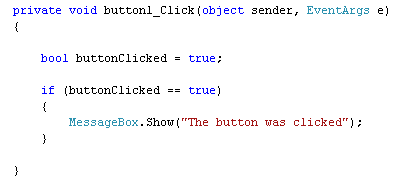

Conditional Logicin C# .NET
Conditional Logic is all about the IF word. In fact, it's practically impossible to programme effectively without using IF. You can write simple programmes like our calculator. But for anything more complicated, you need to get the hang of Conditional Logic.
As an example, take the calculator programme you have just written. It only has a Plus button. We'll be adding another button soon, a Subtract button. Now, you can't say beforehand which of the two buttons your users will click. Do they want to add, or subtract? You need to be able to write code that does the following:
IF the Plus button was clicked, add up
IF the Minus button was clicked, subtract
You can rearrange the two statements above.
Was the Plus button clicked? Yes, or No?
Was the Minus button clicked? Yes, or No?
So the answer for each is either going to be Yes, or No - the button is either clicked, or not clicked.
IF Statements
To test for YES or NO values, you can use an IF statement. You set them up like this:
if ( )
{
}
So you start with the word if (in lowercase), and type a pair of round brackets. In between the round brackets, your type what you want to check for (Was the button clicked?). After the round brackets, it's convenient (but not strictly necessary) to add a pair of curly brackets. In between your curly brackets, you type your code. Your code is what you want to happen IF the answer to your question was YES, or IF the answer was NO. Here's a coding example:
bool buttonClicked = true;
if (buttonClicked = = true)
{
MessageBox.Show(“The button was clicked”);
}
Notice the first line of code:
bool buttonClicked = true;
This is a variable type you haven't met before - bool. The bool is short for Boolean. You use a Boolean variable type when you want to check for true or false values (YES, or NO, if you prefer). This type of variable can only ever be true or false. The name of the bool variable above is buttonClicked. We've set the value to true.
The next few lines are our IF Statement:
if (buttonClicked == true)
{
MessageBox.Show(“The button was clicked”);
}
The double equals sign ( ==) is something else you need to get used to when using IF Statements. It means "Has a value of". The double equals sign is known as a Conditional Operator. (There are a few others that you'll meet shortly.) But the whole of the line reads:
"IF buttonClicked has a value of true"
If you miss out one of the equals signs, you'd have this:
if (buttonClicked = true)
What you're doing here is assigning a value of true to the variable buttonClicked. It's not checking if buttonClicked "Has a value of" true. The difference is important, and will cause you lots of problems if you get it wrong!
In between the curly brackets of the IF statement, we have a simple MessageBox line. But this line will only get executed IF buttonClicked has a value of true.
Let's try it out. Start a new project for this (File > New Project). Add a button to your new form, and set the Text property to "IF Statement". Double click the button, and add the code from above. So your coding window will look like this:

Run your programme and click the button. You should see the message box. Now halt the programme and change this line:
bool buttonClicked = true;
to this
bool buttonClicked = false;
So the only change is from true to false. Run your programme again, and click the button. What happens? Nothing!
The reason that nothing happens is that our IF Statement is checking for a value of true:
if (buttonClicked == true)
C# will only execute the code between the curly brackets IF, and only IF, buttonClicked has a value of true. Since you changed the value to false, it doesn't bother with the MessageBox in between the curly brackets, but moves on instead.
Else
You can also say what should happen if the answer was false. All you need to do is make use of the else word. You do it like this:
if (buttonClicked = = true)
{
}
else
{
}
So you just type the word else after the curly brackets of the IF Statement. And then add another pair of curly brackets. You then write your code for what should happen if the IF Statement was false. Change your code to this:
if (buttonClicked = = true)
{
MessageBox.Show("buttonClicked has a value of true");
}
else
{
MessageBox.Show("buttonClicked has a value of false");
}
So the whole thing reads:
"IF it's true that buttonClicked has a value of true, do one thing. If it's not true, do another thing."
Run your programme, and click the button. You should see the second MessageBox display. Halt the programme and change the first line back to true. So this:
bool buttonClicked = true;
instead of this:
bool buttonClicked = false;
Run the programme again, and click the button. This time, the first message box will display.
The whole point of using IF ..Else Statements, though, is to execute one piece of code instead of some other piece of code.
You can also extend the IF statement and add an else ... if part. This will be useful in our calculator programme. Click below to continue the lessons.